What happened first?
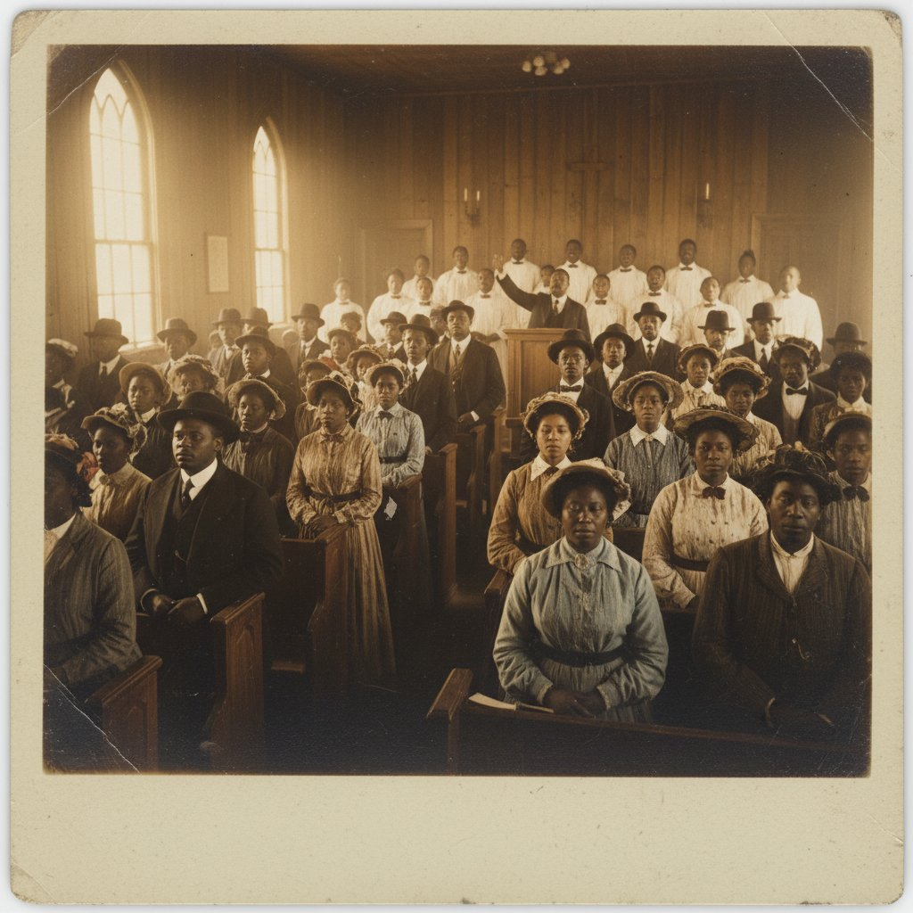
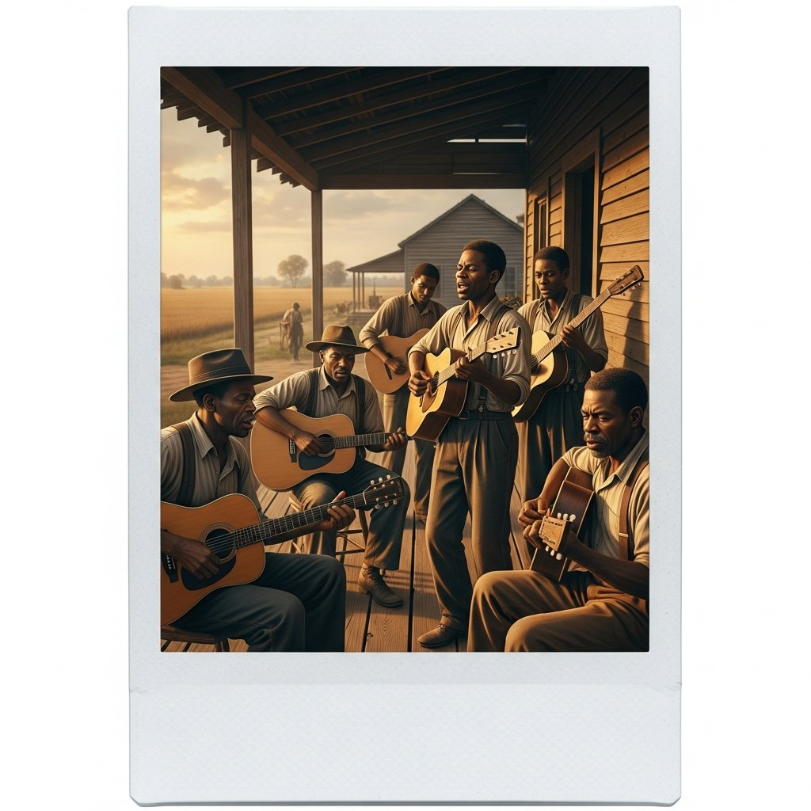
Before we learn the Past Perfect, let's quickly review the Simple Past!
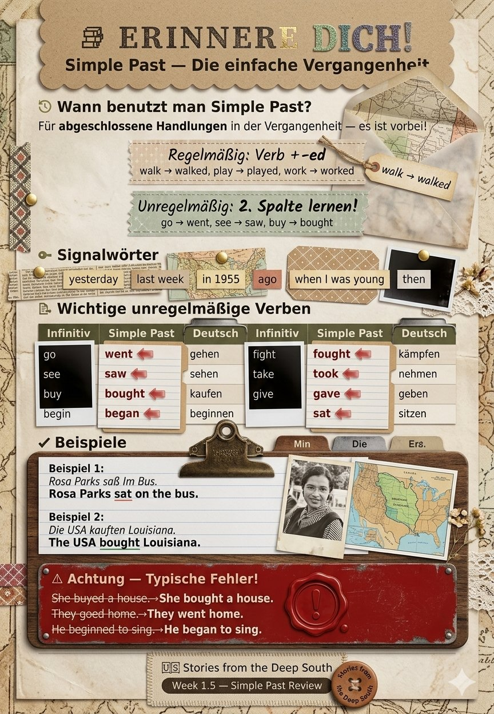
Look and write. Put the orange verbs into the Simple Past.
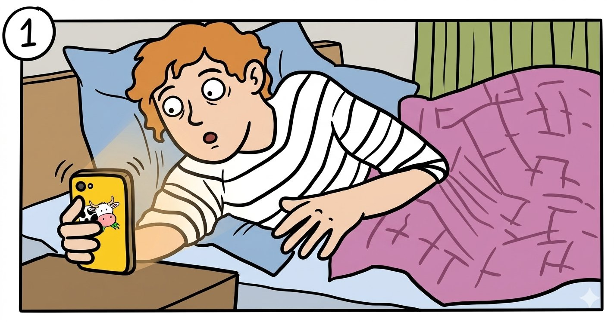
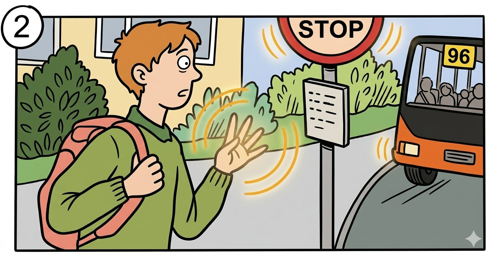
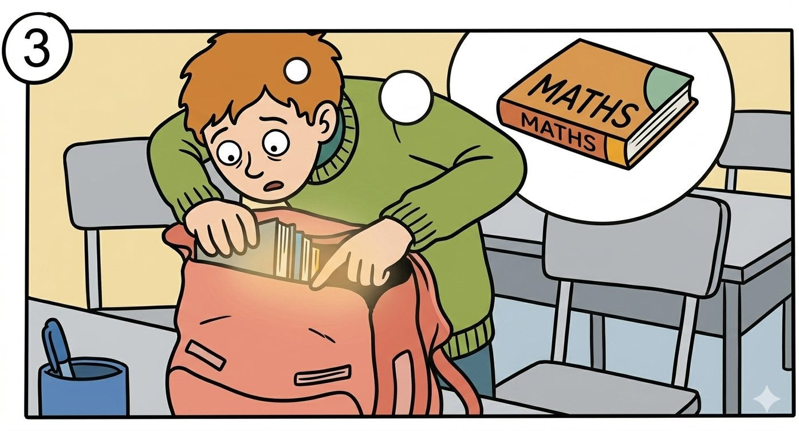
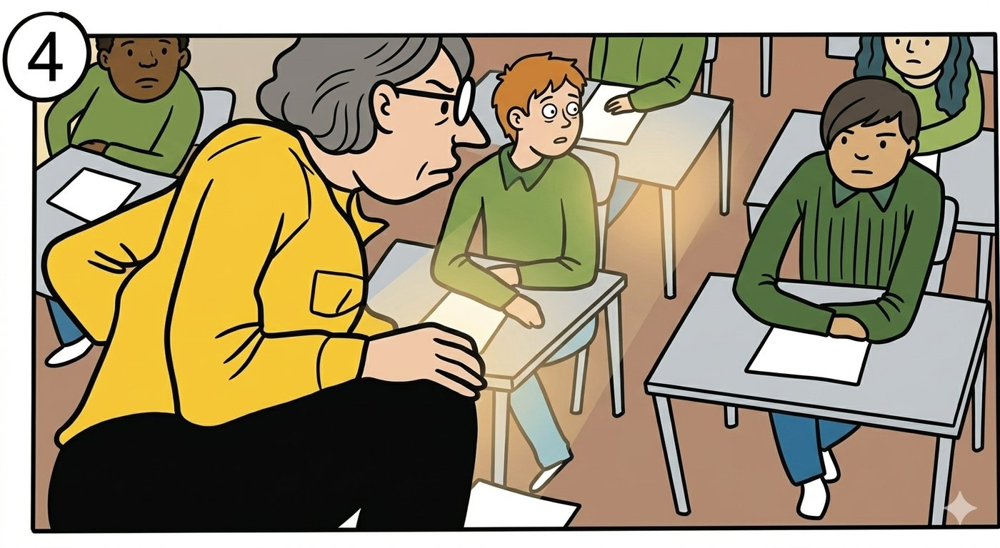
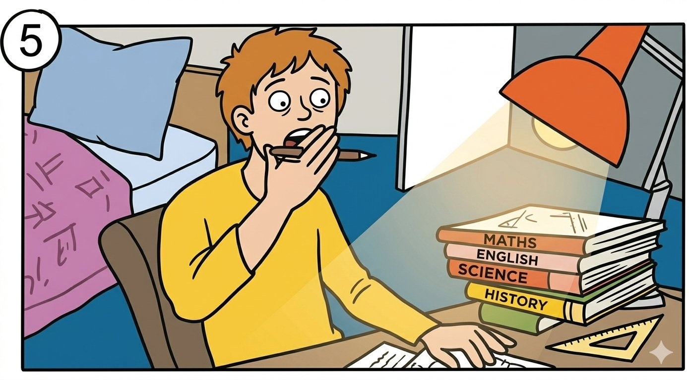
Now that you've reviewed the Simple Past, let's learn how to talk about what happened BEFORE something else!
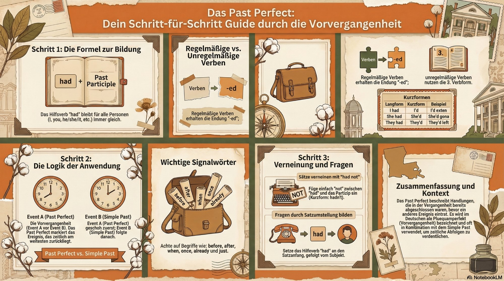
Watch this explanation video to understand the Past Perfect:
Look at the pictures. Each pair shows two events. Write what happened FIRST using the Past Perfect.
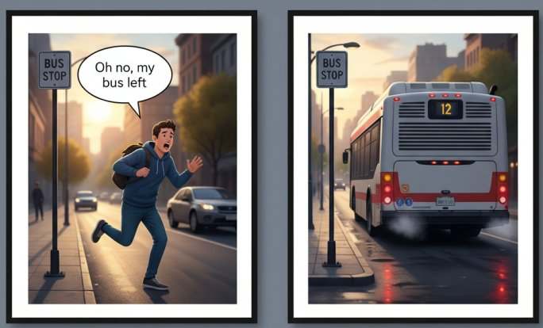
| Picture A | Picture B |
|---|---|
| The person arrives | The bus leaves |
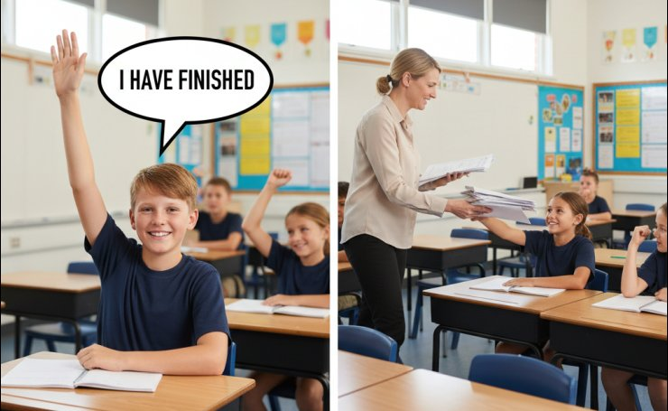
| Picture A | Picture B |
|---|---|
| The student finished the test. | The teacher collects |
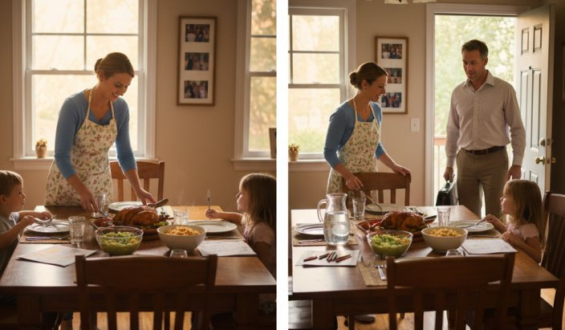
| Picture A | Picture B |
|---|---|
| Mum cooks dinner | Dad comes home |
| 🇩🇪 DEUTSCH | 🇬🇧 ENGLISH |
|---|---|
|
hatte / war + Partizip II Ich hatte gegessen. Sie war gegangen. |
had + past participle I had eaten. She had gone. |
| ✓ Was ist GLEICH? | ⚠ Was ist ANDERS? |
|---|---|
|
• Struktur: Hilfsverb + Partizip • Bedeutung: Aktion VOR einer anderen • Signalwörter: when/als, before/bevor, after/nachdem, already/schon |
• DE: hatte ODER war • EN: nur HAD (immer!) • Wortstellung: DE Partizip am Ende, EN Partizip nach had |
| 🇩🇪 Deutsch | 🇬🇧 English |
|---|---|
| Als ich ankam, war der Bus schon abgefahren. | When I arrived, the bus had already left. |
| Sie hatte das Buch gelesen. | She had read the book. |
| Ich war noch nie nach London geflogen. | I had never flown to London. |
| Nachdem er gegessen hatte, ging er schlafen. | After he had eaten, he went to sleep. |
| Sie hatten die Hausaufgaben nicht gemacht. | They had not done the homework. |
| Infinitiv (DE) | Partizip II | Infinitive (EN) | Past Perfect |
|---|---|---|---|
| essen | gegessen | eat | had eaten |
| trinken | getrunken | drink | had drunk |
| sehen | gesehen | see | had seen |
| gehen | gegangen | go | had gone |
| kommen | gekommen | come | had come |
| schreiben | geschrieben | write | had written |
| lesen | gelesen | read | had read |
| machen | gemacht | do / make | had done / made |
| nehmen | genommen | take | had taken |
| fliegen | geflogen | fly | had flown |
Translate these historical sentences into English using the Past Perfect:
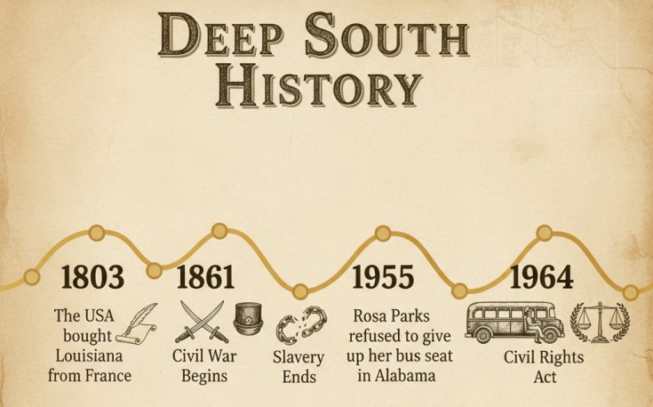
Now it's your turn to write about history!
Write a short paragraph (5-7 sentences) about life in the Deep South before the Civil Rights Act of 1964.
• What had happened before the law changed?
• What had people experienced?
• What had communities done to fight for their rights?
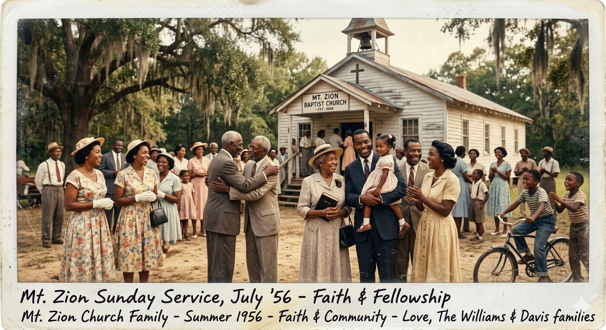
"Before the Civil Rights Act changed everything, communities in the Deep South had built their own strength through faith, music, and perseverance. They had kept hope alive for generations."